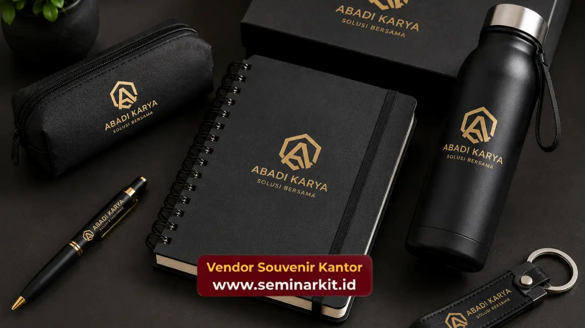

Souvenir kantor custom logo dengan harga sekitar seratus ribu rupiah dapat diproduksi menggunakan berbagai teknik cetak seperti sablon, cetak UV, emboss, atau bordir, tergantung jenis material produk yang dipilih. Setiap teknik memiliki karakteristik hasil akhir yang berbeda, sehingga pemilihannya perlu disesuaikan dengan jenis souvenir dan anggaran perusahaan.
- Sablon menjadi teknik paling efisien untuk produk berbahan kain seperti tas kanvas.
- Cetak UV atau laser cocok untuk produk berbahan keras seperti tumbler stainless.
- Emboss atau debossing memberi kesan elegan pada notebook tanpa tambahan warna cetak.
- Bordir memberikan hasil premium namun umumnya membutuhkan biaya tambahan dibanding sablon.
- vendorsouvenirkantor.web.id membantu proses custom logo dari konsultasi desain hingga produksi selesai.
Apa yang Dimaksud dengan Custom Logo Souvenir Kantor?
Custom logo souvenir kantor adalah proses pencetakan atau pengaplikasian identitas visual perusahaan, seperti logo dan nama brand, ke permukaan produk souvenir agar sesuai dengan kebutuhan branding acara maupun kegiatan korporat. Pada budget seratus ribu rupiah, proses ini tetap dapat dilakukan dengan hasil rapi selama teknik yang digunakan sesuai dengan jenis material produk.
Custom logo tidak hanya berfungsi sebagai identitas visual, tetapi juga menjadi media promosi berkelanjutan setiap kali produk digunakan oleh penerimanya. Semakin sering souvenir dipakai dalam aktivitas sehari-hari, semakin besar pula eksposur logo perusahaan kepada orang-orang di sekitar penerima.
Teknik Sablon untuk Produk Berbahan Kain
Sablon adalah teknik cetak yang paling umum digunakan untuk custom logo pada produk berbahan kain seperti tas kanvas, totebag, dan sebagian jenis payung. Teknik ini dinilai efisien untuk pemesanan dalam jumlah besar karena biaya produksi per unit cenderung lebih rendah dibanding teknik cetak lain.
Hasil sablon pada budget seratus ribu rupiah umumnya menggunakan satu hingga dua warna agar biaya tetap terkendali, dengan desain logo yang disederhanakan namun tetap terbaca jelas. Ketahanan hasil sablon juga dipengaruhi oleh kualitas tinta dan proses curing yang digunakan saat produksi.
Cetak UV dan Laser untuk Produk Berbahan Keras
Cetak UV atau laser menjadi pilihan utama untuk custom logo pada produk berbahan keras seperti tumbler stainless, botol minum, atau case tertentu. Teknik ini menghasilkan cetakan logo yang lebih tajam dan tahan lama dibanding metode cetak konvensional, karena tinta atau proses etsa menempel langsung pada permukaan material.
Pada rentang harga seratus ribu rupiah, cetak UV umumnya digunakan untuk logo satu warna dengan detail yang tidak terlalu rumit, mengingat kompleksitas desain dapat memengaruhi waktu dan biaya produksi. Hasil cetak dengan teknik ini juga relatif tahan terhadap gesekan dan pencucian, sehingga cocok untuk produk yang dipakai dalam jangka panjang.
Emboss dan Debossing untuk Kesan Elegan pada Notebook
Emboss dan debossing adalah teknik mencetak logo dengan cara menekan permukaan material tanpa menambahkan warna cetak, sehingga menghasilkan efek timbul atau cekung pada cover notebook. Teknik ini banyak dipilih untuk souvenir kantor yang ingin memberikan kesan elegan dan minimalis, terutama untuk notebook berbahan sintetis menyerupai kulit.
Karena tidak menggunakan tinta tambahan, teknik emboss maupun deboss relatif efisien dari sisi biaya produksi pada budget menengah seperti seratus ribu rupiah, namun tetap memberikan kesan premium yang kuat pada tampilan akhir produk.
Bordir untuk Hasil Custom Logo Lebih Premium
Bordir adalah teknik menjahit logo pada permukaan kain menggunakan benang, umumnya digunakan pada produk seperti topi atau bagian tertentu dari tas dengan bahan yang mendukung proses jahit. Hasil bordir cenderung memberikan kesan lebih premium dan tahan lama dibanding sablon, namun biaya produksinya biasanya sedikit lebih tinggi.
Pada budget seratus ribu rupiah, bordir dapat tetap digunakan selama ukuran logo tidak terlalu besar dan kompleks, sehingga biaya tambahan yang timbul masih dapat disesuaikan dengan anggaran perusahaan secara keseluruhan.

Apa Syarat File Desain Logo untuk Custom Souvenir Kantor?
File desain logo untuk custom souvenir kantor sebaiknya disiapkan dalam format vektor seperti AI, EPS, atau PDF berbasis vektor, agar hasil cetak tetap presisi meski diperbesar pada produk berukuran besar seperti tas atau payung. Format gambar bitmap seperti JPG atau PNG dengan resolusi rendah berisiko menghasilkan cetakan logo yang pecah atau buram.
Beberapa hal yang perlu diperhatikan saat menyiapkan file desain logo:
- Gunakan format vektor untuk hasil cetak yang presisi pada berbagai ukuran produk.
- Pastikan warna logo sesuai dengan kebutuhan teknik cetak yang dipilih, misalnya logo satu warna untuk sablon sederhana.
- Sertakan panduan warna resmi perusahaan (color guide) agar hasil cetak konsisten dengan identitas brand.
- Konfirmasikan posisi logo pada produk sebelum proses produksi massal dimulai.
Persiapan file desain yang matang akan mempercepat proses produksi sekaligus mengurangi risiko revisi yang dapat memperlama waktu pengerjaan souvenir kantor.
Pesan Souvenir Kantor Custom Logo di Vendor Souvenir Kantor
Proses custom logo souvenir kantor pada budget seratus ribu rupiah akan lebih mudah dan cepat dengan pendampingan tim yang berpengalaman. vendorsouvenirkantor.web.id siap membantu mulai dari konsultasi teknik cetak, penyesuaian desain logo, hingga proses produksi souvenir kantor Anda selesai tepat waktu.
Pemilihan antara hot print, sablon digital, atau UV printing sebaiknya disesuaikan dengan kompleksitas logo perusahaan agar hasil akhir maksimal dan mencerminkan citra profesional brand.

Banner promosi: klik gambar untuk langsung terhubung ke WhatsApp tim sales.